Chapter 18: Evolution and the Origin of Species¶
Introduction¶
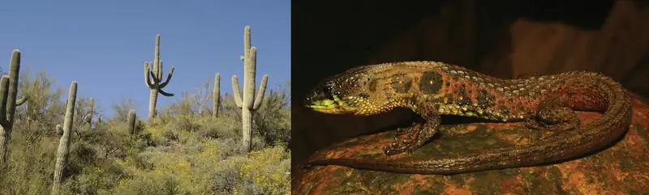
All living organisms, from bacteria to baboons to blueberries, evolved at some point from a different species. Although it may seem that living things today stay much the same, that is not the case—evolution is an ongoing process.
The theory of evolution is the unifying theory of biology, meaning it is the framework within which biologists ask questions about the living world. Its power is that it provides direction for predictions about living things that are borne out in ongoing experiments. The Ukrainian-born American geneticist Theodosius Dobzhansky famously wrote that “nothing makes sense in biology except in the light of evolution.”1 He meant that the tenet that all life has evolved and diversified from a common ancestor is the foundation from which we approach all questions in biology.
18.1 Understanding Evolution¶
Learning Objectives
By the end of this section, you will be able to do the following:
- Describe how scientists developed the present-day theory of evolution
- Define adaptation
- Explain convergent and divergent evolution
- Describe homologous and vestigial structures
- Discuss misconceptions about the theory of evolution
Evolution by natural selection describes a mechanism for how species change over time. Scientists, philosophers, researchers, and others had made suggestions and debated this topic well before Darwin began to explore this idea. Classical Greek philosopher Plato emphasized in his writings that species were static and unchanging, yet there were also ancient Greeks who expressed evolutionary ideas. In the eighteenth century, naturalist Georges-Louis Leclerc Comte de Buffon reintroduced ideas about the evolution of animals and observed that various geographic regions have different plant and animal populations, even when the environments are similar. Some at this time also accepted that there were extinct species.
Also during the eighteenth century, James Hutton, a Scottish geologist and naturalist, proposed that geological change occurred gradually by accumulating small changes from processes operating like they are today over long periods of time. This contrasted with the predominant view that the planet's geology was a consequence of catastrophic events occurring during a relatively brief past. Nineteenth century geologist Charles Lyell popularized Hutton's view. A friend to Darwin. Lyell’s ideas were influential on Darwin’s thinking: Lyell’s notion of the greater age of Earth gave more time for gradual change in species, and the process of change provided an analogy for this change. In the early nineteenth century, Jean-Baptiste Lamarck published a book that detailed a mechanism for evolutionary change. We now refer to this mechanism as an inheritance of acquired characteristics by which the environment causes modifications in an individual, or offspring could use or disuse of a structure during its lifetime, and thus bring about change in a species. While many discredited this mechanism for evolutionary change, Lamarck’s ideas were an important influence on evolutionary thought.
Charles Darwin and Natural Selection¶
In the mid-nineteenth century, two naturalists, Charles Darwin and Alfred Russel Wallace, independently conceived and described the actual mechanism for evolution. Importantly, each naturalist spent time exploring the natural world on expeditions to the tropics. From 1831 to 1836, Darwin traveled around the world on H.M.S. Beagle, including stops in South America, Australia, and the southern tip of Africa. Wallace traveled to Brazil to collect insects in the Amazon rainforest from 1848 to 1852 and to the Malay Archipelago from 1854 to 1862. Darwin’s journey, like Wallace’s later journeys to the Malay Archipelago, included stops at several island chains, the last being the Galápagos Islands west of Ecuador. On these islands, Darwin observed species of organisms on different islands that were clearly similar, yet had distinct differences. For example, the ground finches inhabiting the Galápagos Islands comprised several species with a unique beak shape (Figure 18.2). The species on the islands had a graded series of beak sizes and shapes with very small differences between the most similar. He observed that these finches closely resembled another finch species on the South American mainland. Darwin imagined that the island species might be species modified from one of the original mainland species. Upon further study, he realized that each finch's varied beaks helped the birds acquire a specific type of food. For example, seed-eating finches had stronger, thicker beaks for breaking seeds, and insect-eating finches had spear-like beaks for stabbing their prey.
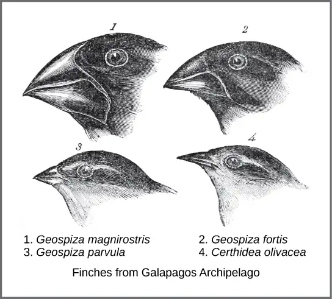
Wallace and Darwin both observed similar patterns in other organisms and they independently developed the same explanation for how and why such changes could take place. Darwin called this mechanism natural selection. Natural selection, or “survival of the fittest,” is the more prolific reproduction of individuals with favorable traits that survive environmental change because of those traits. This leads to evolutionary change.
For example, Darwin observed a population of giant tortoises in the Galápagos Archipelago to have longer necks than those that lived on other islands with dry lowlands. These tortoises were “selected” because they could reach more leaves and access more food than those with short necks. In times of drought when fewer leaves would be available, those that could reach more leaves had a better chance to eat and survive than those that couldn’t reach the food source. Consequently, long-necked tortoises would be more likely to be reproductively successful and pass the long-necked trait to their offspring. Over time, only long-necked tortoises would be present in the population.
Natural selection, Darwin argued, was an inevitable outcome of three principles that operated in nature. First, most characteristics of organisms are inherited, or passed from parent to offspring. Although no one, including Darwin and Wallace, knew how this happened at the time, it was a common understanding. Second, more offspring are produced than are able to survive, so resources for survival and reproduction are limited. The capacity for reproduction in all organisms outstrips the availability of resources to support their numbers. Thus, there is competition for those resources in each generation. Both Darwin and Wallace’s understanding of this principle came from reading economist Thomas Malthus' essay that explained this principle in relation to human populations. Third, offspring vary among each other in regard to their characteristics and those variations are inherited. Darwin and Wallace reasoned that offspring with inherited characteristics which allow them to best compete for limited resources will survive and have more offspring than those individuals with variations that are less able to compete. Because characteristics are inherited, these traits will be better represented in the next generation. This will lead to change in populations over generations in a process that Darwin called descent with modification. Ultimately, natural selection leads to greater adaptation of the population to its local environment. It is the only mechanism known for adaptive evolution.
In 1858, Darwin and Wallace (Figure 18.3) presented papers at the Linnean Society in London that discussed the idea of natural selection. The following year Darwin’s book, On the Origin of Species, was published. His book outlined in considerable detail his arguments for evolution by natural selection.
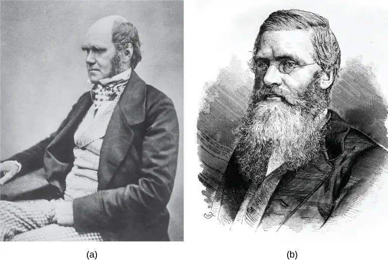
Studies of evolution by natural selection are difficult to conduct, as they require analyses of several generations of the investigated species in order to document the changes pointing to evolutionary change. The Galápagos finches are an excellent example. Peter and Rosemary Grant and their colleagues have studied Galápagos finch populations every year since 1976 and have provided important evidence of natural selection. The Grants found changes from one generation to the next in beak shape distribution with the medium ground finch on the Galápagos island of Daphne Major. The birds have inherited a variation in their bill shape with some having wide deep bills and others having thinner bills. During a period in which rainfall was higher than normal because of an El Niño, there was a lack of large hard seeds of which the large-billed birds ate; however, there was an abundance of the small soft seeds which the small-billed birds ate. Therefore, the small-billed birds were able to survive and reproduce. In the years following this El Niño, the Grants measured beak sizes in the population and found that the average bill size was smaller. Since bill size is an inherited trait, parents with smaller bills had more offspring and the bill evolved into a much smaller size. As conditions improved in 1987 and larger seeds became more available, the trend toward smaller average bill size ceased.
Career Connection: Field Biologist
Many people hike, explore caves, scuba dive, or climb mountains for recreation. People often participate in these activities hoping to see wildlife. Experiencing the outdoors can be incredibly enjoyable and invigorating. What if your job entailed working in the wilderness? Field biologists by definition work outdoors in the “field.” The term field in this case refers to any location outdoors, even under water. A field biologist typically focuses research on a certain species, group of organisms, or a single habitat (Figure 18.4).
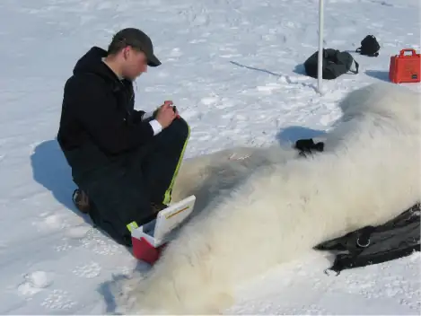
One objective of many field biologists includes discovering new, unrecorded species. Not only do such findings expand our understanding of the natural world, but they also lead to important innovations in fields such as medicine and agriculture. Plant and microbial species, in particular, can reveal new medicinal and nutritive knowledge. Other organisms can play key roles in ecosystems or if rare require protection. When discovered, researchers can use these important species as evidence for environmental regulations and laws.
Processes and Patterns of Evolution¶
Natural selection can only take place if there is variation, or differences, among individuals in a population. Importantly, these differences must have some genetic basis; otherwise, the selection will not lead to change in the next generation. This is critical because nongenetic reasons can cause variation among individuals such as an individual's height because of better nutrition rather than different genes.
Genetic diversity in a population comes from two main mechanisms: mutation and sexual reproduction. Mutation, a change in DNA, is the ultimate source of new alleles, or new genetic variation in any population. The genetic changes that mutation causes can have one of three outcomes on the phenotype. A mutation affects the organism's phenotype in a way that gives it reduced fitness—lower likelihood of survival or fewer offspring. A mutation may produce a phenotype with a beneficial effect on fitness. Many mutations will also have no effect on the phenotype's fitness. We call these neutral mutations. Mutations may also have a whole range of effect sizes on the organism's fitness that expresses them in their phenotype, from a small effect to a great effect. Sexual reproduction also leads to genetic diversity: when two parents reproduce, unique combinations of alleles assemble to produce the unique genotypes and thus phenotypes in each offspring.
We call a heritable trait that helps an organism's survival and reproduction in its present environment an adaptation. Scientists describe groups of organisms adapting to their environment when a genetic variation occurs over time that increases or maintains the population's “fit” to its environment. A platypus's webbed feet are an adaptation for swimming. A snow leopard's thick fur is an adaptation for living in the cold. A cheetah's fast speed is an adaptation for catching prey.
Whether or not a trait is favorable depends on the current environmental conditions. The same traits are not always selected because environmental conditions can change. For example, consider a plant species that grew in a moist climate and did not need to conserve water. Large leaves were selected because they allowed the plant to obtain more energy from the sun. Large leaves require more water to maintain than small leaves, and the moist environment provided favorable conditions to support large leaves. After thousands of years, the climate changed, and the area no longer had excess water. The direction of natural selection shifted so that plants with small leaves were selected because those populations were able to conserve water to survive the new environmental conditions.
The evolution of species has resulted in enormous variation in form and function. Sometimes, evolution gives rise to groups of organisms that become tremendously different from each other. We call two species that evolve in diverse directions from a common point divergent evolution. We can see such divergent evolution in the forms of the reproductive organs of flowering plants which share the same basic anatomies; however, they can look very different as a result of selection in different physical environments and adaptation to different kinds of pollinators (Figure 18.5).
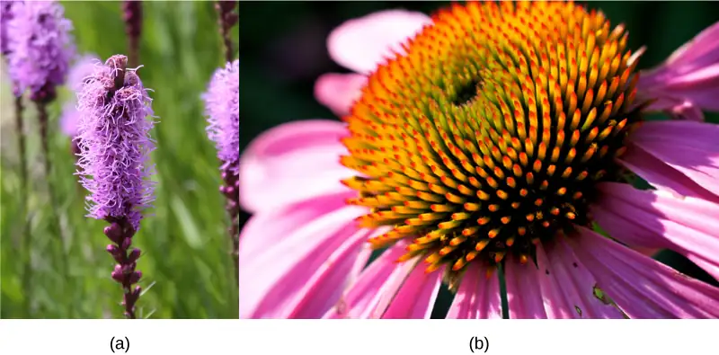
In other cases, similar phenotypes evolve independently in distantly related species. For example, flight has evolved in both bats and insects, and they both have structures we refer to as wings, which are adaptations to flight. However, bat and insect wings have evolved from very different original structures. We call this phenomenon convergent evolution, where similar traits evolve independently in species that do not share a recent common ancestry. The trait in the two species came to be similar in structure and have the same function, flying, but did so separately from each other.
These physical changes occur over enormous time spans and help explain how evolution occurs. Natural selection acts on individual organisms, which can then shape an entire species. Although natural selection may work in a single generation on an individual, it can take thousands or even millions of years for an entire species' genotype to evolve. It is over these large time spans that life on earth has changed and continues to change.
Evidence of Evolution¶
The evidence for evolution is compelling and extensive. Looking at every level of organization in living systems, biologists see the signature of past and present evolution. Darwin dedicated a large portion of his book, On the Origin of Species, to identifying patterns in nature that were consistent with evolution, and since Darwin, our understanding has become clearer and broader.
Fossils¶
Fossils provide solid evidence that organisms from the past are not the same as those today, and fossils show the gradual evolutionary changes over time. Scientists determine the age of fossils and categorize them from all over the world to determine when the organisms lived relative to each other. The resulting fossil record tells the story of the past and shows the evolution of form over millions of years (Figure 18.6). For example, scientists have recovered highly detailed records showing the evolution of humans and horses (Figure 18.6). The whale flipper shares a similar morphology to bird and mammal appendages (Figure 18.7) indicating that these species share a common ancestor.
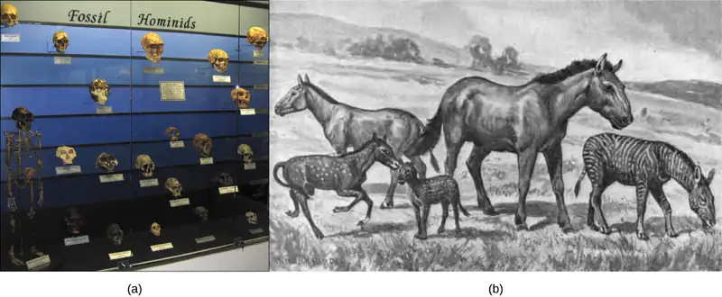
Anatomy and Embryology¶
Another type of evidence for evolution is the presence of structures in organisms that share the same basic form. For example, the bones in human, dog, bird, and whale appendages all share the same overall construction (Figure 18.7) resulting from their origin in a common ancestor's appendages. Over time, evolution led to changes in the bones' shapes and sizes in different species, but they have maintained the same overall layout. Scientists call these synonymous parts homologous structures.
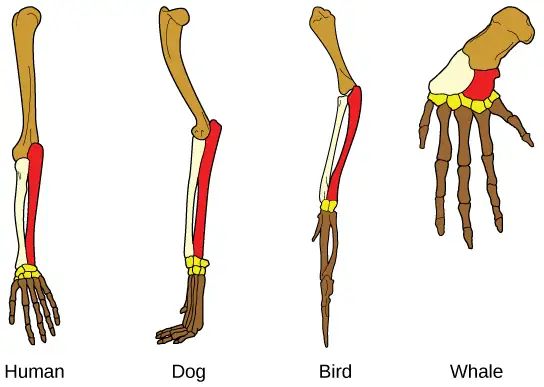
Some structures exist in organisms that have no apparent function at all, and appear to be residual parts from a past common ancestor. We call these unused structures without function vestigial structures. Other examples of vestigial structures are wings on flightless birds, leaves on some cacti, and hind leg bones in whales. Not all similarities represent homologous structures. As explained in Determining Evolutionary Relationships, when similar characteristics occur because of environmental constraints and not due to a close evolutionary relationship, it is an analogy or homoplasy. For example, insects use wings to fly like bats and birds, but the wing structure and embryonic origin are completely different. These are analogous structures (Figure 20.8). On the other side, the bird and bat wings are homologous because the bones are inherited from a common ancestor, while the wings themselves are analogous as they evolved independently.
Interactive
Watch this video exploring the bones in the human body.
Another piece of evidence of evolution is the convergence of form in organisms that share similar environments. For example, species of unrelated animals, such as the arctic fox and ptarmigan, living in the arctic region have been selected for seasonal white phenotypes during winter to blend with the snow and ice (Figure 18.8). These similarities occur not because of common ancestry, but because of similar selection pressures—the benefits of predators not seeing them.
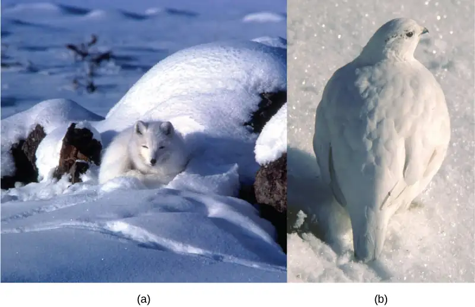
Embryology, the study of the anatomy of an organism's development to its adult form, also provides evidence of relatedness between now widely divergent groups of organisms. Mutational tweaking in the embryo can have such magnified consequences in the adult that embryo formation tends to be conserved. As a result, structures that are absent in some groups often appear in their embryonic forms and disappear when they reach the adult or juvenile form. For example, all vertebrate embryos, including humans, exhibit gill slits and tails at some point in their early development. These disappear in the adults of terrestrial groups but adult forms of aquatic groups such as fish and some amphibians maintain them. Great ape embryos, including humans, have a tail structure during their development that they lose when they are born.
Biogeography¶
The geographic distribution of organisms on the planet follows patterns that we can explain best by evolution in conjunction with tectonic plate movement over geological time. Broad groups that evolved before the supercontinent Pangaea broke up (about 200 million years ago) are distributed worldwide. Groups that evolved since the breakup appear uniquely in regions of the planet, such as the unique flora and fauna of northern continents that formed from the supercontinent Laurasia and of the southern continents that formed from the supercontinent Gondwana. The presence of members of the plant family Proteaceae in Australia, southern Africa, and South America indicates that their ancestors were predominant on the supercontinent Gondwana prior to its breaking up.
Marsupial diversification in Australia and the absence of other mammals reflect Australia’s long isolation. Australia has an abundance of endemic species—species found nowhere else—which is typical of islands whose isolation by expanses of water prevents species from migrating. Over time, these species diverge evolutionarily into new species that look very different from their ancestors that may exist on the mainland. Australia's marsupials, the Galápagos' finches, and many species on the Hawaiian Islands are all unique to their one point of origin, yet they display distant relationships to ancestral species on mainlands.
Molecular Biology¶
Like anatomical structures, the molecular structures of life reflect descent with modification. DNA's universality reflects evidence of a common ancestor for all of life. Fundamental divisions in life between the genetic code, DNA replication, and expression are reflected in major structural differences in otherwise conservative structures such as ribosome components and membrane structures. In general, the relatedness of groups of organisms is reflected in the similarity of their DNA sequences—exactly the pattern that we would expect from descent and diversification from a common ancestor.
DNA sequences have also shed light on some of the mechanisms of evolution. For example, it is clear that the evolution of new functions for proteins commonly occurs after gene duplication events that allow freely modifying one copy by mutation, selection, or drift (changes in a population’s gene pool resulting from chance), while the second copy continues to produce a functional protein.
Misconceptions of Evolution¶
Although the theory of evolution generated some controversy when Darwin first proposed it, biologists almost universally accepted it, particularly younger biologists, within 20 years after publication of On the Origin of Species. Nevertheless, the theory of evolution is a difficult concept and misconceptions about how it works abound.
Interactive
This site addresses some of the main misconceptions associated with the theory of evolution.
Evolution Is Just a Theory¶
Critics of the theory of evolution dismiss its importance by purposefully confounding the everyday usage of the word “theory” with the way scientists use the word. In science, we understand a “theory” to be a body of thoroughly tested and verified explanations for a set of observations of the natural world. Scientists have a theory of the atom, a theory of gravity, and the theory of relativity, each which describes understood facts about the world. In the same way, the theory of evolution describes facts about the living world. As such, a theory in science has survived significant efforts to discredit it by scientists. In contrast, a “theory” in common vernacular is a word meaning a guess or suggested explanation. This meaning is more akin to the scientific concept of “hypothesis.” When critics of evolution say it is “just a theory,” they are implying that there is little evidence supporting it and that it is still in the process of rigorous testing. This is a mischaracterization.
Individuals Evolve¶
Evolution is the change in a population's genetic composition over time, specifically over generations, resulting from differential reproduction of individuals with certain alleles. Individuals do change over their lifetime, obviously, but this is development and involves changes programmed by the set of genes the individual acquired at birth in coordination with the individual’s environment. When thinking about the evolution of a characteristic, it is probably best to think about the change of the average value of the characteristic in the population over time. For example, when natural selection leads to bill-size change in medium ground finches in the Galápagos, this does not mean that individual bills on the finches are changing. If one measures the average bill size among all individuals in the population at one time and then measures them in the population several years later, this average value will be different as a result of evolution. Although some individuals may survive from the first time to the second, they will still have the same bill size; however, there will be many new individuals who contribute to the shift in average bill size.
Evolution Explains the Origin of Life¶
It is a common misunderstanding that evolution includes an explanation of life’s origins. Some of the theory’s critics believe that it cannot explain the origin of life. The theory does not try to explain the origin of life. The theory of evolution explains how populations change over time and how life diversifies the origin of species. It does not shed light on the beginnings of life including the origins of the first cells, which define life. Importantly, biologists believe that the presence of life on Earth precludes the possibility that the events that led to life on Earth can repeat themselves because the intermediate stages would immediately become food for existing living things.
However, once a mechanism of inheritance was in place in the form of a molecule like DNA either within a cell or pre-cell, these entities would be subject to the principle of natural selection. More effective reproducers would increase in frequency at the expense of inefficient reproducers. While evolution does not explain the origin of life, it may have something to say about some of the processes operating once pre-living entities acquired certain properties.
Organisms Evolve on Purpose¶
Statements such as “organisms evolve in response to a change in an environment” are quite common, but such statements can lead to two types of misunderstandings. First, do not interpret the statement to mean that individual organisms evolve. The statement is shorthand for “a population evolves in response to a changing environment.” However, a second misunderstanding may arise by interpreting the statement to mean that the evolution is somehow intentional. A changed environment results in some individuals in the population, those with particular phenotypes, benefiting and therefore producing proportionately more offspring than other phenotypes. This results in change in the population if the characteristics are genetically determined.
It is also important to understand that the variation that natural selection works on is already in a population and does not arise in response to an environmental change. For example, applying antibiotics to a population of bacteria will, over time, select a population of bacteria that are resistant to antibiotics. The resistance, which a gene causes, did not arise by mutation because of applying the antibiotic. The gene for resistance was already present in the bacteria's gene pool, likely at a low frequency. The antibiotic, which kills the bacterial cells without the resistance gene, strongly selects individuals that are resistant, since these would be the only ones that survived and divided. Experiments have demonstrated that mutations for antibiotic resistance do not arise as a result of antibiotic application.
In a larger sense, evolution is not goal directed. Species do not become “better” over time. They simply track their changing environment with adaptations that maximize their reproduction in a particular environment at a particular time. Evolution has no goal of making faster, bigger, more complex, or even smarter species, despite the commonness of this kind of language in popular discourse. What characteristics evolve in a species are a function of the variation present and the environment, both of which are constantly changing in a nondirectional way. A trait that fits in one environment at one time may well be fatal at some point in the future. This holds equally well for insect and human species.
18.2 Formation of New Species¶
Learning Objectives
By the end of this section, you will be able to do the following:
- Define species and describe how scientists identify species as different
- Describe genetic variables that lead to speciation
- Identify prezygotic and postzygotic reproductive barriers
- Explain allopatric and sympatric speciation
- Describe adaptive radiation
Although all life on earth shares various genetic similarities, only certain organisms combine genetic information by sexual reproduction and have offspring that can then successfully reproduce. Scientists call such organisms members of the same biological species.
Species and the Ability to Reproduce¶
A species is a group of individual organisms that interbreed and produce fertile, viable offspring. According to this definition, one species is distinguished from another when, in nature, it is not possible for matings between individuals from each species to produce fertile offspring.
Members of the same species share both external and internal characteristics, which develop from their DNA. The closer relationship two organisms share, the more DNA they have in common, just like people and their families. People’s DNA is likely to be more like their father or mother’s DNA than their cousin or grandparent’s DNA. Organisms of the same species have the highest level of DNA alignment and therefore share characteristics and behaviors that lead to successful reproduction.
Species’ appearance can be misleading in suggesting an ability or inability to mate. For example, even though domestic dogs (Canis lupus familiaris) display phenotypic differences, such as size, build, and coat, most dogs can interbreed and produce viable puppies that can mature and sexually reproduce (Figure 18.9).
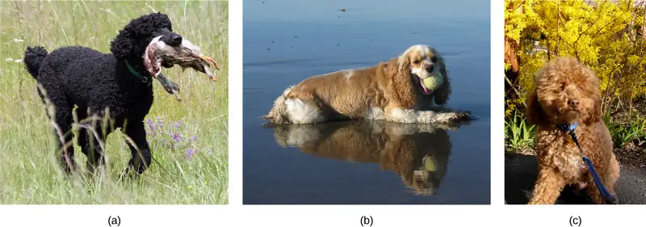
In other cases, individuals may appear similar although they are not members of the same species. For example, even though bald eagles (Haliaeetus leucocephalus) and African fish eagles (Haliaeetus vocifer) are both birds and eagles, each belongs to a separate species group (Figure 18.10). If humans were to artificially intervene and fertilize a bald eagle's egg with an African fish eagle's sperm and a chick did hatch, that offspring, called a hybrid (a cross between two species), would probably be infertile—unable to successfully reproduce after it reached maturity. Different species may have different genes that are active in development; therefore, it may not be possible to develop a viable offspring with two different sets of directions. Thus, even though hybridization may take place, the two species still remain separate.
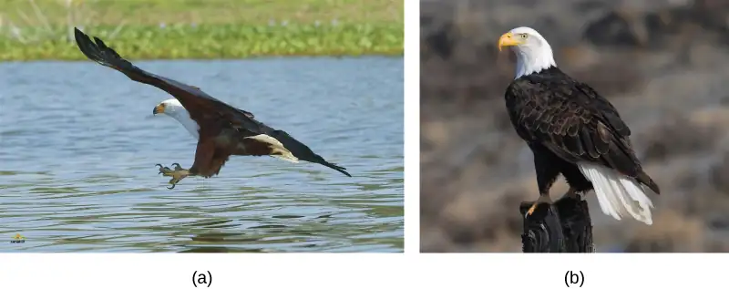
Populations of species share a gene pool: a collection of all the gene variants in the species. Again, the basis to any changes in a group or population of organisms must be genetic for this is the only way to share and pass on traits. When variations occur within a species, they can only pass to the next generation along two main pathways: asexual reproduction or sexual reproduction. The change will pass on asexually simply if the reproducing cell possesses the changed trait. For the changed trait to pass on by sexual reproduction, a gamete, such as a sperm or egg cell, must possess the changed trait. In other words, sexually-reproducing organisms can experience several genetic changes in their body cells, but if these changes do not occur in a sperm or egg cell, the changed trait will never reach the next generation. Only heritable traits can evolve. Therefore, reproduction plays a paramount role for genetic change to take root in a population or species. In short, organisms must be able to reproduce with each other to pass new traits to offspring.
Speciation¶
The biological definition of species, which works for sexually reproducing organisms, is a group of actual or potential interbreeding individuals. There are exceptions to this rule. Many species are similar enough that hybrid offspring are possible and may often occur in nature, but for the majority of species this rule generally holds. The presence in nature of hybrids between similar species suggests that they may have descended from a single interbreeding species, and the speciation process may not yet be completed.
Given the extraordinary diversity of life on the planet there must be mechanisms for speciation: the formation of two species from one original species. Darwin envisioned this process as a branching event and diagrammed the process in the only illustration in On the Origin of Species (Figure 18.11a). Compare this illustration to the diagram of elephant evolution (Figure 18.11b), which shows that as one species changes over time, it branches to form more than one new species, repeatedly, as long as the population survives or until the organism becomes extinct.
![Image (a) shows a sketch of lines branching into a tree shape. At the bottom are 11 vertical lines labeled A through L. These then are branched out as they move up across the page through fourteen rows labeled with Roman numerals. Some branches make a straight line from the bottom row to the top row, others keep branching out further at each row, and some are straight partway through the rows until they connect to an existing branch or form no connection and instead stop. The top four rows contain lines branching out from 6 locations on row 11 to 15 individual final designations on row 14. Illustration B shows the evolution of modern African and Asian elephants from a common ancestor, the Palaeomastodon. The Palaeomastodon was similar to modern elephants; however, it was smaller and had a long nose instead of a trunk. Side branches of the elephant evolutionary tree gave rise to mastodons and mammoths. The mammoth is more closely related to modern elephants than the mastodon.](img/figure-18-02-03ab.webp)
For speciation to occur, two new populations must form from one original population and they must evolve in such a way that it becomes impossible for individuals from the two new populations to interbreed. Biologists have proposed mechanisms by which this could occur that fall into two broad categories. Allopatric speciation (allo- = "other"; -patric = "homeland") involves geographic separation of populations from a parent species and subsequent evolution. Sympatric speciation (sym- = "same"; -patric = "homeland") involves speciation occurring within a parent species remaining in one location.
Biologists think of speciation events as the splitting of one ancestral species into two descendant species. There is no reason why more than two species might not form at one time except that it is less likely and we can conceptualize multiple events as single splits occurring close in time.
Allopatric Speciation¶
A geographically continuous population has a gene pool that is relatively homogeneous. Gene flow, the movement of alleles across a species' range, is relatively free because individuals can move and then mate with individuals in their new location. Thus, an allele's frequency at one end of a distribution will be similar to the allele's frequency at the other end. When populations become geographically discontinuous, it prevents alleles' free-flow. When that separation lasts for a period of time, the two populations are able to evolve along different trajectories. Thus, their allele frequencies at numerous genetic loci gradually become increasingly different as new alleles independently arise by mutation in each population. Typically, environmental conditions, such as climate, resources, predators, and competitors for the two populations will differ causing natural selection to favor divergent adaptations in each group.
Isolation of populations leading to allopatric speciation can occur in a variety of ways: a river forming a new branch, erosion creating a new valley, a group of organisms traveling to a new location without the ability to return, or seeds floating over the ocean to an island. The nature of the geographic separation necessary to isolate populations depends entirely on the organism's biology and its potential for dispersal. If two flying insect populations took up residence in separate nearby valleys, chances are, individuals from each population would fly back and forth continuing gene flow. However, if a new lake divided two rodent populations continued gene flow would be unlikely; therefore, speciation would be more likely.
Biologists group allopatric processes into two categories: dispersal and vicariance. Dispersal is when a few members of a species move to a new geographical area, and vicariance is when a natural situation arises to physically divide organisms.
Scientists have documented numerous cases of allopatric speciation taking place. For example, along the west coast of the United States, two separate spotted owl subspecies exist. The northern spotted owl has genetic and phenotypic differences from its close relative: the Mexican spotted owl, which lives in the south (Figure 18.12).
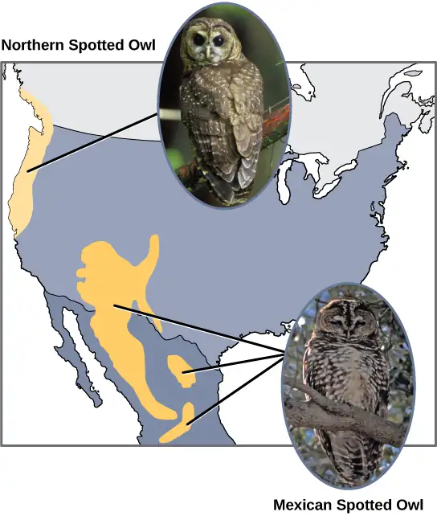
Additionally, scientists have found that the further the distance between two groups that once were the same species, the more likely it is that speciation will occur. This seems logical because as the distance increases, the various environmental factors would likely have less in common than locations in close proximity. Consider the two owls: in the north, the climate is cooler than in the south. The types of organisms in each ecosystem differ, as do their behaviors and habits. Also, the hunting habits and prey choices of the southern owls vary from the northern owls. These variances can lead to evolved differences in the owls, and speciation likely will occur.
Adaptive Radiation¶
In some cases, a population of one species disperses throughout an area, and each finds a distinct niche or isolated habitat. Over time, the varied demands of their new lifestyles lead to multiple speciation events originating from a single species. We call this adaptive radiation because many adaptations evolve from a single point of origin; thus, causing the species to radiate into several new ones. Island archipelagos like the Hawaiian Islands provide an ideal context for adaptive radiation events because water surrounds each island which leads to geographical isolation for many organisms. The Hawaiian honeycreeper illustrates one example of adaptive radiation. From a single species, the founder species, numerous species have evolved, including the six in Figure 18.13.
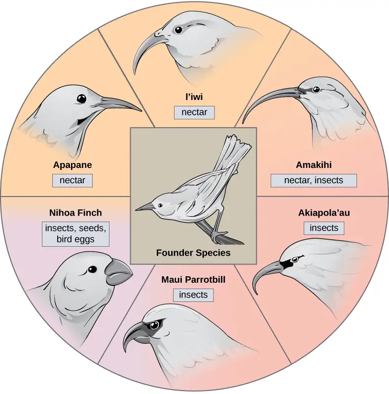
Notice the differences in the species’ beaks in Figure 18.13. Evolution in response to natural selection based on specific food sources in each new habitat led to evolution of a different beak suited to the specific food source. The seed-eating bird has a thicker, stronger beak which is suited to break hard nuts. The nectar-eating birds have long beaks to dip into flowers to reach the nectar. The insect-eating birds have beaks like swords, appropriate for stabbing and impaling insects. Darwin’s finches are another example of adaptive radiation in an archipelago.
Interactive
Watch this video to see how scientists use evidence to understand how birds evolved.
Sympatric Speciation¶
Can divergence occur if no physical barriers are in place to separate individuals who continue to live and reproduce in the same habitat? The answer is yes. We call the process of speciation within the same space sympatric. The prefix “sym” means same, so “sympatric” means “same homeland” in contrast to “allopatric” meaning “other homeland.” Scientists have proposed and studied many mechanisms.
One form of sympatric speciation can begin with a serious chromosomal error during cell division. In a normal cell division event chromosomes replicate, pair up, and then separate so that each new cell has the same number of chromosomes. However, sometimes the pairs separate and the end cell product has extra sets of chromosomes in a condition that we call polyploidy (Figure 18.14).
Visual Connection
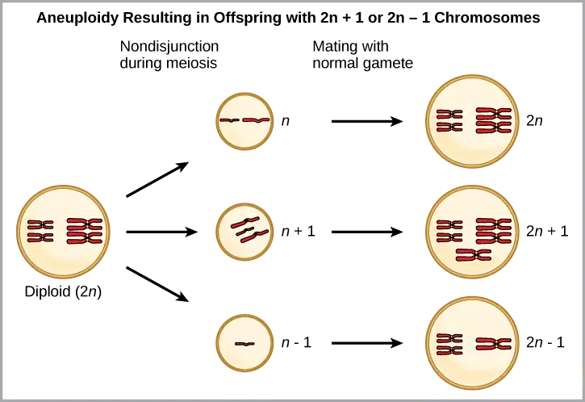
Which is most likely to survive, offspring with 2n+1 chromosomes or offspring with 2n-1 chromosomes?
Polyploidy is a condition in which a cell or organism has an extra set, or sets, of chromosomes. Scientists have identified two main types of polyploidy that can lead to reproductive isolation of an individual in the polyploidy state. Reproductive isolation is the inability to interbreed. In some cases, a polyploid individual will have two or more complete sets of chromosomes from its own species in a condition that we call autopolyploidy (Figure 18.15). The prefix “auto-” means “self,” so the term means multiple chromosomes from one’s own species. Polyploidy results from an error in meiosis in which all of the chromosomes move into one cell instead of separating.
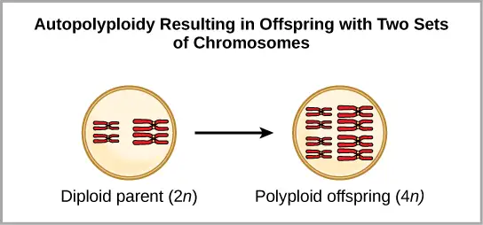
For example, if a plant species with 2n = 6 produces autopolyploid gametes that are also diploid (2n = 6, when they should be n = 3), the gametes now have twice as many chromosomes as they should have. These new gametes will be incompatible with the normal gametes that this plant species produces. However, they could either self-pollinate or reproduce with other autopolyploid plants with gametes having the same diploid number. In this way, sympatric speciation can occur quickly by forming offspring with 4n that we call a tetraploid. These individuals would immediately be able to reproduce only with those of this new kind and not those of the ancestral species.
The other form of polyploidy occurs when individuals of two different species reproduce to form a viable offspring that we call an allopolyploid. The prefix “allo-” means “other” (recall from allopatric): therefore, an allopolyploid occurs when gametes from two different species combine. Figure 18.16 illustrates one possible way an allopolyploid can form. Notice how it takes two generations, or two reproductive acts, before the viable fertile hybrid results.
![Alloploidy results from viable matings between two species with different numbers of chromosomes. In the example shown, species one has two pairs of chromosomes, and species two has three pairs of chromosomes. When an unreduced gamete from species one (with two pairs of chromosomes) fuses with a normal gamete from species two (with three unpaired chromosomes), a hybrid zygote with seven chromosomes results. An offspring from this mating produces an unreduced gamete with seven chromosomes. If this unreduced gamete fuses with a normal gamete from species one, with three chromosomes, the resulting offspring will have ten viable chromosomes (five pairs of chromosomes).](img/figure-b18-03-05.webp)
The cultivated forms of wheat, cotton, and tobacco plants are all allopolyploids. Although polyploidy occurs occasionally in animals, it takes place most commonly in plants. (Animals with any of the types of chromosomal aberrations that we describe here are unlikely to survive and produce normal offspring.) Scientists have discovered more than half of all plant species studied relate back to a species evolved through polyploidy. With such a high rate of polyploidy in plants, some scientists hypothesize that this mechanism takes place more as an adaptation than as an error.
Reproductive Isolation¶
Given enough time, the genetic and phenotypic divergence between populations will affect characters that influence reproduction: if individuals of the two populations were brought together, mating would be less likely, but if mating occurred, offspring would be nonviable or infertile. Many types of diverging characters may affect the reproductive isolation, the ability to interbreed, of the two populations.
Reproductive isolation can take place in a variety of ways. Scientists organize them into two groups: prezygotic barriers and postzygotic barriers. Recall that a zygote is a fertilized egg: the first cell of an organism's development that reproduces sexually. Therefore, a prezygotic barrier is a mechanism that blocks reproduction from taking place. This includes barriers that prevent fertilization when organisms attempt reproduction. A postzygotic barrier occurs after zygote formation. This includes organisms that don’t survive the embryonic stage and those that are born sterile.
Some types of prezygotic barriers prevent reproduction entirely. Many organisms only reproduce at certain times of the year, often just annually. Differences in breeding schedules, which we call temporal isolation, can act as a form of reproductive isolation. For example, two frog species inhabit the same area, but one reproduces from January to March; whereas, the other reproduces from March to May (Figure 18.17).
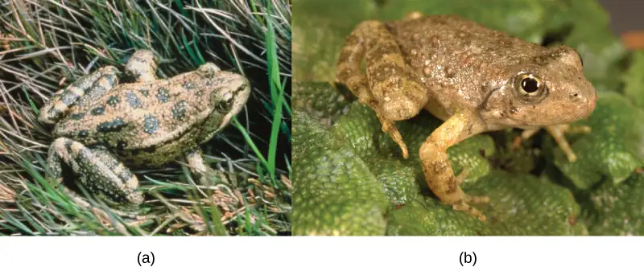
In some cases, populations of a species move or are moved to a new habitat and take up residence in a place that no longer overlaps with the same species' other populations. We call this situation habitat isolation. Reproduction with the parent species ceases, and a new group exists that is now reproductively and genetically independent. For example, a cricket population that was divided after a flood could no longer interact with each other. Over time, natural selection forces, mutation, and genetic drift will likely result in the two groups diverging (Figure 18.18).
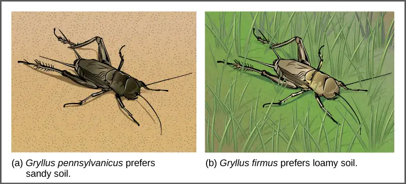
Behavioral isolation occurs when the presence or absence of a specific behavior prevents reproduction. For example, male fireflies use specific light patterns to attract females. Various firefly species display their lights differently. If a male of one species tried to attract the female of another, she would not recognize the light pattern and would not mate with the male.
Other prezygotic barriers work when differences in their gamete cells (eggs and sperm) prevent fertilization from taking place. We call this a gametic barrier. Similarly, in some cases closely related organisms try to mate, but their reproductive structures simply do not fit together. For example, damselfly males of different species have differently shaped reproductive organs. If one species tries to mate with the female of another, their body parts simply do not fit together. (Figure 18.19).
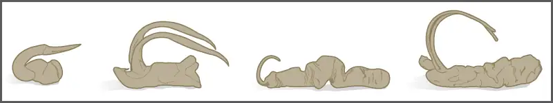
In plants, certain structures aimed to attract one type of pollinator simultaneously prevent a different pollinator from accessing the pollen. The tunnel through which an animal must access nectar can vary widely in length and diameter, which prevents the plant from cross-pollinating with a different species (Figure 18.20).
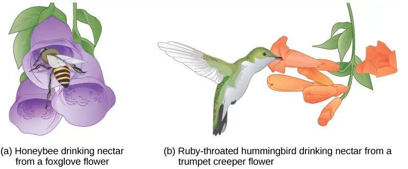
When fertilization takes place and a zygote forms, postzygotic barriers can prevent reproduction. Hybrid individuals in many cases cannot form normally in the womb and simply do not survive past the embryonic stages. We call this hybrid inviability because the hybrid organisms simply are not viable. In another postzygotic situation, reproduction leads to hybrid birth and growth that is sterile. Therefore, the organisms are unable to reproduce offspring of their own. We call this hybrid sterility.
Habitat Influence on Speciation¶
Sympatric speciation may also take place in ways other than polyploidy. For example, consider a fish species that lives in a lake. As the population grows, competition for food increases. Under pressure to find food, suppose that a group of these fish had the genetic flexibility to discover and feed off another resource that other fish did not use. What if this new food source was located at a different depth of the lake? Over time, those feeding on the second food source would interact more with each other than the other fish; therefore, they would breed together as well. Offspring of these fish would likely behave as their parents: feeding and living in the same area and keeping separate from the original population. If this group of fish continued to remain separate from the first population, eventually sympatric speciation might occur as more genetic differences accumulated between them.
This scenario does play out in nature, as do others that lead to reproductive isolation. One such place is Lake Victoria in Africa, famous for its sympatric speciation of cichlid fish. Researchers have found hundreds of sympatric speciation events in these fish, which have not only happened in great number, but also over a short period of time. Figure 18.21 shows this type of speciation among a cichlid fish population in Nicaragua. In this locale, two types of cichlids live in the same geographic location but have come to have different morphologies that allow them to eat various food sources.
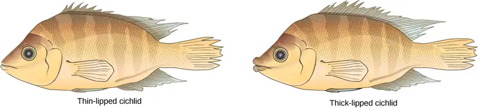
18.3 Reconnection and Speciation Rates¶
Learning Objectives
By the end of this section, you will be able to do the following:
- Describe pathways of species evolution in hybrid zones
- Explain the two major theories on rates of speciation
Speciation occurs over a span of evolutionary time, so when a new species arises, there is a transition period during which the closely related species continue to interact.
Reconnection¶
After speciation, two species may recombine or even continue interacting indefinitely. Individual organisms will mate with any nearby individual with whom they are capable of breeding. We call an area where two closely related species continue to interact and reproduce, forming hybrids a hybrid zone. Over time, the hybrid zone may change depending on the fitness of the hybrids and the reproductive barriers (Figure 18.22). If the hybrids are less fit than the parents, speciation reinforcement occurs, and the species continue to diverge until they can no longer mate and produce viable offspring. If reproductive barriers weaken, fusion occurs and the two species become one. Barriers remain the same if hybrids are fit and reproductive: stability may occur and hybridization continues.
Visual Connection
![Three different possible changes in the hybrid zone may occur over time. The first possible change, reinforcement, results when hybrids are less fit than either purebred species. Like a fork in the road, the species continue to diverge until hybridization no longer occurs. The second possible change, fusion, results when reproductive barriers weaken until two species become one. In this scenario species initially diverge, but then join together. In the third scenario, stability, fit hybrids continue to be produced at a steady rate.](img/figure-18-03-01.webp)
If two species eat a different diet but one of the food sources is eliminated and both species are forced to eat the same foods, what change in the hybrid zone is most likely to occur?
Hybrids can be either less fit than the parents, more fit, or about the same. Usually hybrids tend to be less fit; therefore, such reproduction diminishes over time, nudging the two species to diverge further in a process we call reinforcement. Scientists use this term because the hybrids' low success reinforces the original speciation. If the hybrids are as fit or more fit than the parents, the two species may fuse back into one species (Figure 18.23). Scientists have also observed that sometimes two species will remain separate but also continue to interact to produce some individuals. Scientists classify this as stability because no real net change is taking place.
Varying Rates of Speciation¶
Scientists around the world study speciation, documenting observations both of living organisms and those found in the fossil record. As their ideas take shape and as research reveals new details about how life evolves, they develop models to help explain speciation rates. In terms of how quickly speciation occurs, we can observe two current patterns: gradual speciation model and punctuated equilibrium model.
In the gradual speciation model, species diverge gradually over time in small steps. In the punctuated equilibrium model, a new species undergoes changes quickly from the parent species, and then remains largely unchanged for long periods of time afterward (Figure 18.23). We call this early change model punctuated equilibrium, because it begins with a punctuated or periodic change and then remains in balance afterward. While punctuated equilibrium suggests a faster tempo, it does not necessarily exclude gradualism.
Visual Connection
![In the gradual speciation example, a founder species of bird diverges into one species with a hooked beak, and another with strait beak. Over time, through gradual intermediate stages, the hooked beak gets longer and thinner, and the straight beak gets shorter and fatter. In the punctuated equilibrium example, as in the graduated speciation example, the founder species diverges into one species with a hooked break and another with a straight beak. However, in this case the hooked and straight beaks remain unchanged for a significant period of time, and only then give rise to long, thin and short, fat beaks.](img/figure-18-03-02-96a7.webp)
Which of the following statements is false?
- Punctuated equilibrium is most likely to occur in a small population that experiences a rapid change in its environment.
- Punctuated equilibrium is most likely to occur in a large population that lives in a stable climate.
- Gradual speciation is most likely to occur in species that live in a stable climate.
- Gradual speciation and punctuated equilibrium both result in the divergence of species.
The primary influencing factor on changes in speciation rate is environmental conditions. Under some conditions, selection occurs quickly or radically. Consider a species of snails that had been living with the same basic form for many thousands of years. Layers of their fossils would appear similar for a long time. When a change in the environment takes place—such as a drop in the water level—a small number of organisms are separated from the rest in a brief period of time, essentially forming one large and one tiny population. The tiny population faces new environmental conditions. Because its gene pool quickly became so small, any variation that surfaces and that aids in surviving the new conditions becomes the predominant form.
Interactive
Visit this website to continue the speciation story of the snails.
Chapter Review¶
Key Terms¶
- adaptation
- heritable trait or behavior in an organism that aids in its survival and reproduction in its present environment
- adaptive radiation
- speciation when one species radiates to form several other species
- allopatric speciation
- speciation that occurs via geographic separation
- allopolyploid
- polyploidy formed between two related, but separate species
- aneuploidy
- condition of a cell having an extra chromosome or missing a chromosome for its species
- autopolyploid
- polyploidy formed within a single species
- behavioral isolation
- type of reproductive isolation that occurs when a specific behavior or lack of one prevents reproduction from taking place
- convergent evolution
- process by which groups of organisms independently evolve to similar forms
- dispersal
- allopatric speciation that occurs when a few members of a species move to a new geographical area
- divergent evolution
- process by which groups of organisms evolve in diverse directions from a common point
- gametic barrier
- prezygotic barrier occurring when closely related individuals of different species mate, but differences in their gamete cells (eggs and sperm) prevent fertilization from taking place
- gradual speciation model
- model that shows how species diverge gradually over time in small steps
- habitat isolation
- reproductive isolation resulting when species' populations move or are moved to a new habitat, taking up residence in a place that no longer overlaps with the same species' other populations
- homologous structures
- parallel structures in diverse organisms that have a common ancestor
- hybrid
- offspring of two closely related individuals, not of the same species
- hybrid zone
- area where two closely related species continue to interact and reproduce, forming hybrids
- natural selection
- reproduction of individuals with favorable genetic traits that survive environmental change because of those traits, leading to evolutionary change
- postzygotic barrier
- reproductive isolation mechanism that occurs after zygote formation
- prezygotic barrier
- reproductive isolation mechanism that occurs before zygote formation
- punctuated equilibrium
- model for rapid speciation that can occur when an event causes a small portion of a population to be cut off from the rest of the population
- reinforcement
- continued speciation divergence between two related species due to low fitness of hybrids between them
- reproductive isolation
- situation that occurs when a species is reproductively independent from other species; behavior, location, or reproductive barriers may cause this to happen
- speciation
- formation of a new species
- species
- group of populations that interbreed and produce fertile offspring
- sympatric speciation
- speciation that occurs in the same geographic space
- temporal isolation
- differences in breeding schedules that can act as a form of prezygotic barrier leading to reproductive isolation
- variation
- genetic differences among individuals in a population
- vestigial structure
- physical structure present in an organism but that has no apparent function and appears to be from a functional structure in a distant ancestor
- vicariance
- allopatric speciation that occurs when something in the environment separates organisms of the same species into separate groups
Summary¶
18.1 Understanding Evolution¶
Evolution is the process of adaptation through mutation, natural selection, and genetic drift which allows more desirable characteristics to pass to the next generation. Over time, populations evolve more characteristics that are beneficial to their survival. For living organisms to adapt and change to environmental pressures, genetic variation must be present. With genetic variation, individuals have differences in form and function that allow some to survive certain conditions better than others. These organisms pass their favorable traits to their offspring. Eventually, environments change, and what was once a desirable, advantageous trait may become an undesirable trait and organisms may further evolve. Evolution may be convergent with similar traits evolving in multiple species or divergent with diverse traits evolving in multiple species that came from a common ancestor. We can observe evidence of evolution by means of DNA code and the fossil record, and also by the existence of homologous and vestigial structures.
18.2 Formation of New Species¶
Speciation occurs along two main pathways: geographic separation (allopatric speciation) and through mechanisms that occur within a shared habitat (sympatric speciation). Both pathways isolate a population reproductively in some form. Mechanisms of reproductive isolation act as barriers between closely related species, enabling them to diverge and exist as genetically independent species. Prezygotic barriers block reproduction prior to formation of a zygote; whereas, postzygotic barriers block reproduction after fertilization occurs. For a new species to develop, something must introduce a reproductive barrier. Sympatric speciation can occur through errors in meiosis that form gametes with extra chromosomes (polyploidy). Autopolyploidy occurs within a single species; whereas, allopolyploidy occurs between closely related species.
18.3 Reconnection and Speciation Rates¶
Speciation is not a precise division: overlap between closely related species can occur in areas called hybrid zones. Organisms reproduce with other similar organisms. The fitness of these hybrid offspring can affect the two species' evolutionary path. Scientists propose two models for the rate of speciation: one model illustrates how a species can change slowly over time. The other model demonstrates how change can occur quickly from a parent generation to a new species. Both models continue to follow natural selection patterns.
Review Questions¶
18.1 Understanding Evolution¶
1. Which scientific concept did Charles Darwin and Alfred Wallace independently discover?
- mutation
- natural selection
- overbreeding
- sexual reproduction
Answer
B
2. Which of the following situations will lead to natural selection?
- The seeds of two plants land near each other and one grows larger than the other.
- Two types of fish eat the same kind of food, and one is better able to gather food than the other.
- Male lions compete for the right to mate with females, with only one possible winner.
- all of the above
Answer
D
3. Which description is an example of a phenotype?
- A certain duck has a blue beak.
- A mutation occurred to a flower.
- Most cheetahs live solitary lives.
- both a and c
Answer
D
4. Which situation is most likely an example of convergent evolution?
- Squid and humans have eyes similar in structure.
- Worms and snakes both move without legs.
- Some bats and birds have wings that allow them to fly.
- all of the above
Answer
D
18.2 Formation of New Species¶
5. Which situation would most likely lead to allopatric speciation?
- Flood causes the formation of a new lake.
- A storm causes several large trees to fall down.
- A mutation causes a new trait to develop.
- An injury causes an organism to seek out a new food source.
Answer
A
6. What is the main difference between dispersal and vicariance?
- One leads to allopatric speciation, whereas the other leads to sympatric speciation.
- One involves the movement of the organism, and the other involves a change in the environment.
- One depends on a genetic mutation occurring, and the other does not.
- One involves closely related organisms, and the other involves only individuals of the same species.
Answer
B
7. Which variable increases the likelihood of allopatric speciation taking place more quickly?
- lower rate of mutation
- longer distance between divided groups
- increased instances of hybrid formation
- equivalent numbers of individuals in each population
Answer
B
8. What is the main difference between autopolyploid and allopolyploid?
- the number of chromosomes
- the functionality of the chromosomes
- the source of the extra chromosomes
- the number of mutations in the extra chromosomes
Answer
C
9. Which reproductive combination produces hybrids?
- when individuals of the same species in different geographical areas reproduce
- when any two individuals sharing the same habitat reproduce
- when members of closely related species reproduce
- when offspring of the same parents reproduce
Answer
C
10. Which condition is the basis for a species to be reproductively isolated from other members?
- It does not share its habitat with related species.
- It does not exist out of a single habitat.
- It does not exchange genetic information with other species.
- It does not undergo evolutionary changes for a significant period of time.
Answer
C
11. Which situation is not an example of a prezygotic barrier?
- Two species of turtles breed at different times of the year.
- Two species of flowers attract different pollinators.
- Two species of birds display different mating dances.
- Two species of insects produce infertile offspring.
Answer
D
18.3 Reconnection and Speciation Rates¶
12. Which term is used to describe the continued divergence of species based on the low fitness of hybrid offspring?
- reinforcement
- fusion
- stability
- punctuated equilibrium
Answer
A
13. Which components of speciation would be least likely to be a part of punctuated equilibrium?
- a division of populations
- a change in environmental conditions
- ongoing gene flow among all individuals
- a large number of mutations taking place at once
Answer
C
Critical Thinking Questions¶
18.1 Understanding Evolution¶
14. If a person scatters a handful of garden pea plant seeds in one area, how would natural selection work in this situation?
Answer
The plants that can best use the resources of the area, including competing with other individuals for those resources will produce more seeds themselves and those traits that allowed them to better use the resources will increase in the population of the next generation.
15. Why do scientists consider vestigial structures evidence for evolution?
Answer
Vestigial structures are considered evidence for evolution because most structures do not exist in an organism without serving some function either presently or in the past. A vestigial structure indicates a past form or function that has since changed, but the structure remains present because it had a function in the ancestor.
16. How does the scientific meaning of “theory” differ from the common vernacular meaning?
Answer
In science, a theory is a thoroughly tested and verified set of explanations for a body of observations of nature. It is the strongest form of knowledge in science. In contrast, a theory in common vernacular can mean a guess or speculation about something, meaning that the knowledge implied by the theory is very weak.
17. Explain why the statement that a monkey is more evolved than a mouse is incorrect.
Answer
The statement implies that there is a goal to evolution and that the monkey represents greater progress to that goal than the mouse. Both species are likely to be well adapted to their particular environments, which is the outcome of natural selection.
18.2 Formation of New Species¶
18. Why do island chains provide ideal conditions for adaptive radiation to occur?
Answer
Organisms of one species can arrive to an island together and then disperse throughout the chain, each settling into different niches and exploiting different food resources to reduce competition.
19. Two species of fish had recently undergone sympatric speciation. The males of each species had a different coloring through which the females could identify and choose a partner from her own species. After some time, pollution made the lake so cloudy that it was hard for females to distinguish colors. What might take place in this situation?
Answer
It is likely the two species would start to reproduce with each other. Depending on the viability of their offspring, they may fuse back into one species.
20. Why can polyploidy individuals lead to speciation fairly quickly?
Answer
The formation of gametes with new n numbers can occur in one generation. After a couple of generations, enough of these new hybrids can form to reproduce together as a new species.
18.3 Reconnection and Speciation Rates¶
21. What do both rate of speciation models have in common?
Answer
Both models continue to conform to the rules of natural selection, and the influences of gene flow, genetic drift, and mutation.
22. Describe a situation where hybrid reproduction would cause two species to fuse into one.
Answer
If the hybrid offspring are as fit or more fit than the parents, reproduction would likely continue between both species and the hybrids, eventually bringing all organisms under the umbrella of one species.
Visual Connection Questions¶
18.2 Formation of New Species¶
23. Figure 18.14 Which is most likely to survive, offspring with 2n+1 chromosomes or offspring with 2n-1 chromosomes?
Answer
Figure 18.14 Loss of genetic material is almost always lethal, so offspring with 2n+1 chromosomes are more likely to survive.
18.3 Reconnection and Speciation Rates¶
24. Figure 18.22 If two species eat a different diet but one of the food sources is eliminated and both species are forced to eat the same foods, what change in the hybrid zone is most likely to occur?
Answer
Figure 18.22 Fusion is most likely to occur because the two species will interact more and similar traits in food acquisition will be selected.
25. Figure 18.23 Which of the following statements is false?
- Punctuated equilibrium is most likely to occur in a small population that experiences a rapid change in its environment.
- Punctuated equilibrium is most likely to occur in a large population that lives in a stable climate.
- Gradual speciation is most likely to occur in species that live in a stable climate.
- Gradual speciation and punctuated equilibrium both result in the evolution of new species.
Answer
Figure 18.23 Answer B
Adapted from Biology 2e by OpenStax, licensed under CC BY 4.0. Access the original for free at openstax.org. Changes: converted to the web reading format of The Open Book Project.
-
Theodosius Dobzhansky. “Biology, Molecular and Organismic.” American Zoologist 4, no. 4 (1964): 449. ↩